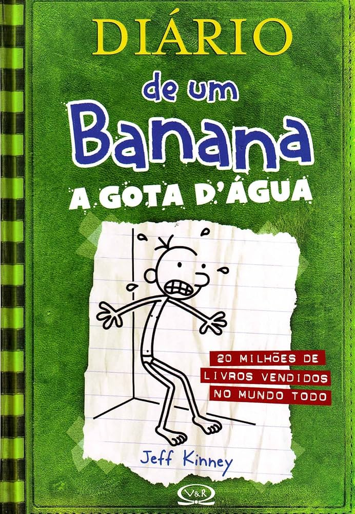
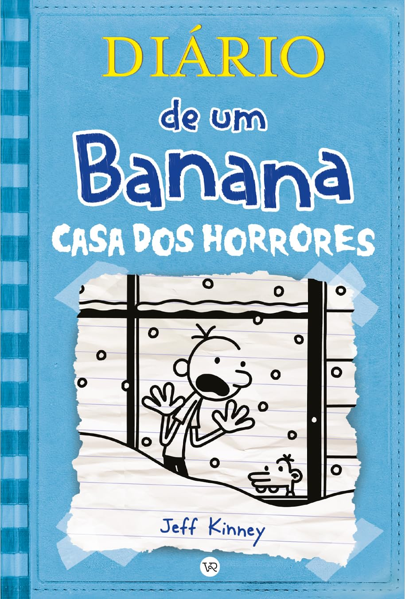

Diario de um banana 1

O livro é sobre um menino chamado Greg Heffley e suas tentativas de se tornar popular em seu sexto ano do ensino fundamental.
Diario de um banana 2

O segundo da série Diário de um Banana, e é a sequência de Diário de um Banana.
Diario de um banana 3
Greg não toma jeito mesmo. E a cada dia se envolve em mais confusão.
Diario de um banana 4

As férias de verão de Greg Heffley começaram, e ele prefere ficar em casa a jogar videogames em vez de fazer atividades ao ar livre,contra os desejos da sua mãe,que quer mais "união da família" e aventuras.
Diario de um banana 5

foca nas dificuldades de Greg Heffley ao entrar na adolescência, confrontando as festas masculinas e femininas, as responsabilidades crescentes e as mudanças corporais.
Diario de um banana 6
Greg é o principal suspeito de um vandalismo na escola e se torna um "foragido da polícia", enquanto uma forte tempestade de neve deixa ele e sua família presos em casa.